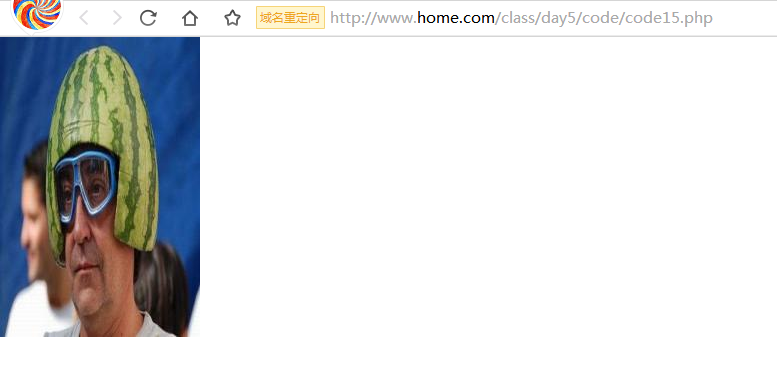

GD图像处理技术
4. 案例：制作水印图
功能分析
- 根据一张需要打上水印的图片(目标图)创建一个画布；
- 将logo图也打开成一个画布；
- 在目标图上选择一个坐标基点；
- 在logo图上也选择一个坐标基点（左上角0，0点）；
- 将logo图拖拽到目标图片画布中，将logo图的基点对齐目标图的基点；
- 调整logo图的透明度（20%）;
- 将成品图保存成图片文件；
- 关闭目标图片画布；
- 关闭logo图片画布；
代码实现
构建程序文件名为code14.php，代码如下：
1 |
|
访问code14.php，效果如下：
5. 案例：制作缩略图
固定宽高缩略图
功能分析
- 根据目标缩略图的尺寸创建一个空白画布（dst）（200×300）；
- 将需要缩小的那张图片（src）打开成一个画布；
- 在dst画布上选择左上角(0,0)点作为dst图的坐标基点；
- 在src画布上选择左上角(0,0)点作为src图的坐标基点；
- 将src图拖拽到dst画布中，然后将src的坐标基点对齐dst图的坐标基点；
- 调整src图的宽度到与dst相同的宽度；并且调整src图的高度到与dst相同的高度；
- 将成品图保存成文件；
- 关闭dst画布资源；
- 关闭src画布资源；
代码实现
创建名为code15.php的程序文件，代码如下：
1 |
|
访问code15.php的效果：

固定宽高的缩略图，可能导致缩小后图片变形的效果，所以我们还需要改进。
等比缩略图
- 根据源图的宽高比创建目标缩略图的空白画布（dst）；
- 将需要缩小的那张图片（src）打开成一个画布；
- 在dst画布上选择左上角(0,0)点作为dst图的坐标基点；
- 在src画布上选择左上角(0,0)点作为src图的坐标基点；
- 将src图拖拽到dst画布中，然后将src的坐标基点对齐dst图的坐标基点；
- 调整src图的宽度到与dst相同的宽度；并且调整src图的高度到与dst相同的高度；
- 将成品图保存成文件；
- 关闭dst画布资源；
- 关闭src画布资源；
创建名为code16.php的程序文件，代码如下：
1 |
|
访问code16.php，效果为：
6. 案例：制作验证码
功能分析
- 创建画布，填充背景色；
- 在画布上随机字；
- 在画布上构建干扰元素（干扰点，干扰线，干扰弧线）；
代码实现
创建名为code17.php的程序文件，代码如下：
1 |
|
访问code17.php，效果为：